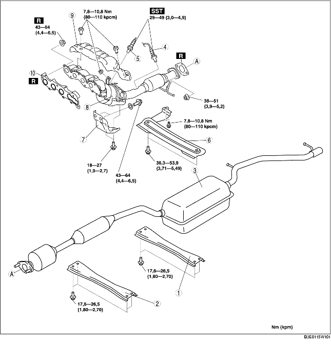

1. Ta bort tändstiftskyddet. (Se DEMONTERING/MONTERING AV TÄNDSTIFTSKYDD [LF].)
2. Demontera batterikåpan och batterikanalen. (Se DEMONTERING/MONTERING AV BATTERIET [LF].)
3. Lossa batteriets minuskabel.
4. Ta bort den undre kåpan.
5. Demontera i den ordning som anges i tabellen.
6. Montera i omvänd ordning mot demonteringen.

.
|
1
|
Bakre rörbalk
|
|
2
|
Främre rörbalk
|
|
3
|
Huvudljuddämpare
|
|
4
|
Bakre uppvärmd syresond
|
|
5
|
Främre uppvärmd syresond
|
|
6
|
Balk
|
|
7
|
Avgasrörsfäste
|
|
8
|
WU-TWC
|
|
9
|
Grenrörsskydd
|
|
10
|
Avgasgrenrörspackning
|
1. Lossa den nedre stötdämparbulten och fästbulten för den bakre tvärbalken, och sänk den bakre tvärbalken cirka 70 mm {2,8 tum}. (Se DEMONTERING/MONTERING AV BAKRE TVÄRBALK.)
1. Ta av framhjul och framdäck.
2. Koppla ur rattstången från styrväxelns och länksystemets sida. (Se DEMONTERING/MONTERING AV STYRVÄXEL OCH LÄNKSYSTEM.)
3. Demontera gummimotorfäste nr. 1. (Se DEMONTERING/MONTERING AV MOTOR [LF].)
4. Lossa skruvarna som håller avgasgrenröret.
5. Ta loss fästbultarna för främre krängningshämmaren och främre tvärbalkskomponenten. (Se DEMONTERING/MONTERING AV TVÄRBALK FRAM.)
6. Lossa fästskruvarna för den främre tvärbalkskomponenten och sänk ner den främre tvärbalkskomponenten cirka 100 mm {3,94 tum}. (Se DEMONTERING/MONTERING AV TVÄRBALK FRAM.)
7. Stötta upp det flexibla röret med en stödlindning eller spjäla som figuren visar.
8. Demontera avgasgrenröret genom att sänka det mot fordonets undersida.
1. Dra åt avgasgrenrörets muttrar i den ordning som visas i figuren.